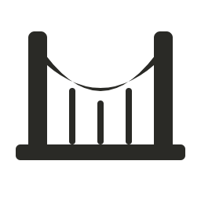
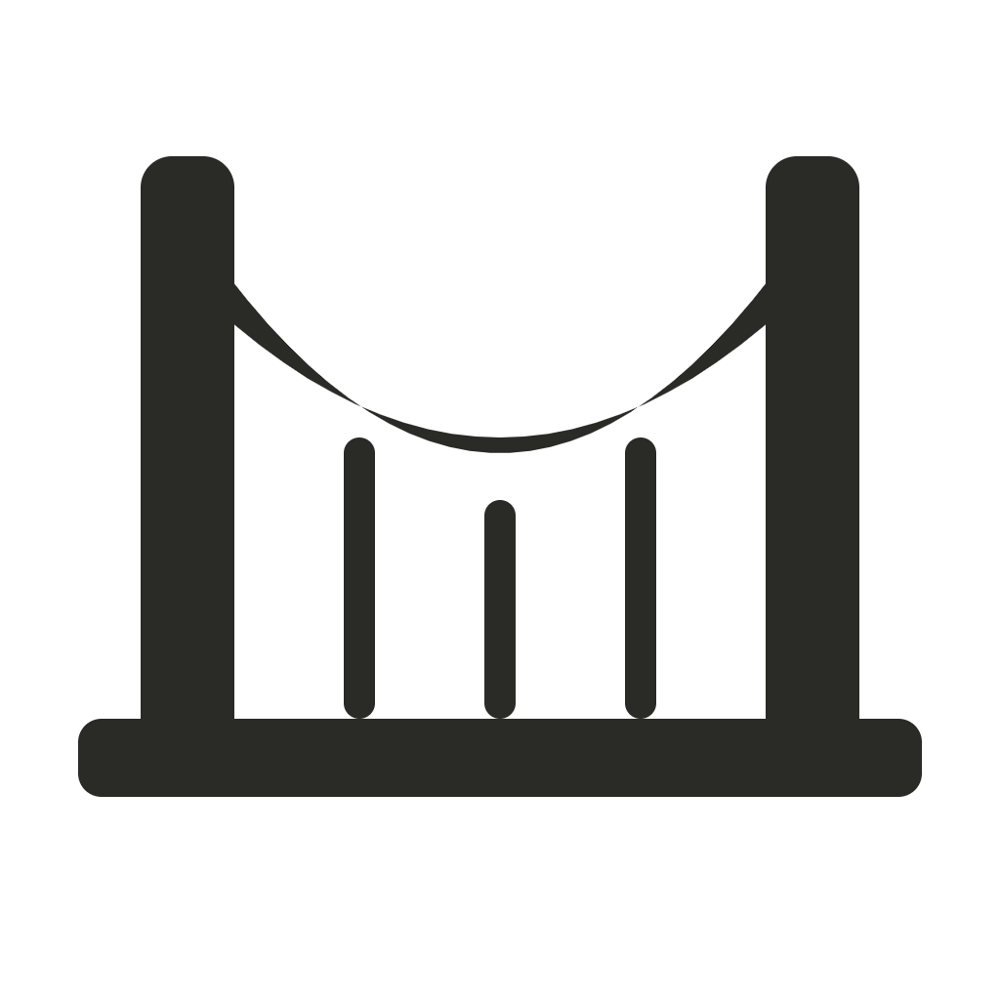
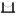
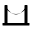
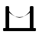

All assets sit under icon/. Vector masters are the source of truth; PNGs were exported from them and re-export deterministically if a master changes. Bundle steps (.icns / .ico) live in icon/README.md — those tools (iconutil, ImageMagick) need to run on your dev machine.


bridge.simple.{light,dark}.svg — the simplified silhouette (no hangers) — also lives in master/ and is used for the 24 px and 16 px rasters. Same shape, just the catenary + pylons + deck.





